{kind=link}
{kind=link}
{kind=link}
{kind=link}
{kind=link}
{kind=link}
{kind=link}
![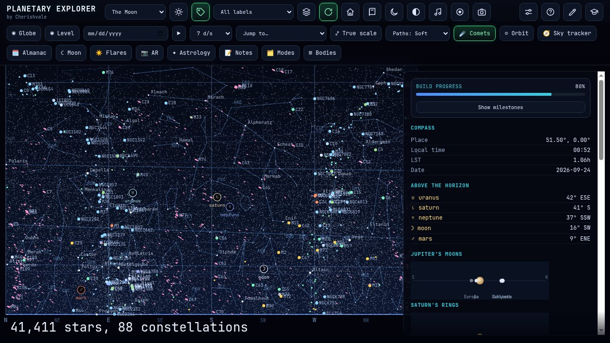41,411 stars (108,000 optional). 88 constellations. 1,900 deep-sky objects. A real chart of the night sky — every constellation with its stick figure and IAU boundary, thousands of stars, and the Messier, Caldwell and brightest NGC/IC galaxies, nebulae and clusters, plotted where they are and coloured by type. Filter the list, tap an object, and read a Tonight plan: its altitude now, transit time and height, rise and set, and a 24-hour altitude curve. Toggle 🔴 Night mode to dim the whole app to red and keep your dark adaptation.](assets/screens/deepsky.jpg){kind=link}
{kind=link}
{kind=link}
{kind=link}
{kind=link}
{kind=link}
{kind=link}
![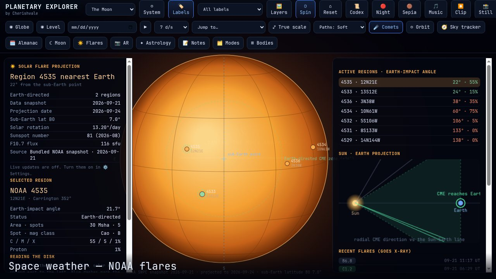The Sun, as it is now. ☀ Flares mode plots the Sun's active regions from public-domain NOAA SWPC data — location, size, sunspot class and C-flare / M-flare / X-flare probabilities. Our own projection geometry rotates each region to the date you choose, draws it on the Earth-facing disk, and measures the angle to the Sun–Earth line, so you can see which regions are Earth-directed and whether a CME's cone would reach us. Flare history, planetary Kp, solar-wind speed and density, the interplanetary field's Bz and the sunspot number are all in the panels. It works fully offline from a bundled snapshot; if you like, you can let it refresh straight from NOAA when you have a connection.](assets/screens/flares.jpg){kind=link}
{kind=link}
{kind=link}
{kind=link}
{kind=link}
{kind=link}
{kind=link}
{kind=link}
{kind=link}
{kind=link}
{kind=link}
{kind=link}
{kind=link}
{kind=link}
{kind=link}
{kind=link}
{kind=link}
{kind=link}
{kind=link}
{kind=link}
{kind=link}
{kind=link}
{kind=link}
{kind=link}
{kind=link}
{kind=link}
{kind=link}
{kind=link}
{kind=link}
{kind=link}
Click anywhere to close · Esc
Browser demo — first load downloads the full offline atlas, so it is best on Wi-Fi. (Opens the demo site.)
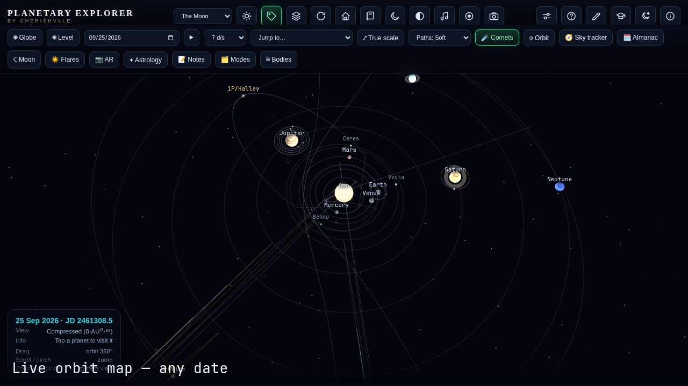
The live orbit map. Every planet where it really is, for any date from 1800 to 2050 — set a date, press play, watch the system turn. Track named comets, switch the orbit drawing style, or flip to true scale to feel how empty space really is.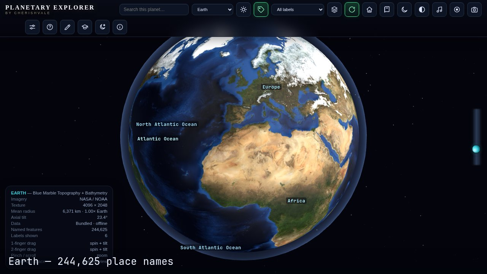
244,625 place names. Earth carries a full gazetteer that reveals itself as you descend — countries, states and provinces, capitals, cities, peaks, seas, lakes, rivers. Filter by category, or search and fly to anywhere.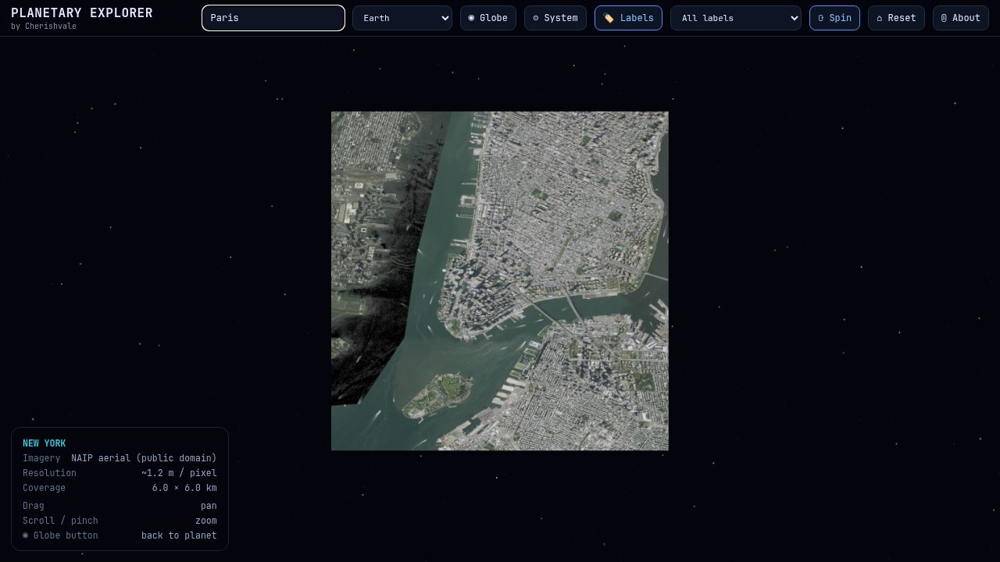
Street-level Earth. Open any of seven metro areas as a flat, pannable map at about 1.2 metres per pixel, now stored as tile pyramids so streets stay sharp as you zoom — individual streets and buildings, from public-domain aerial imagery.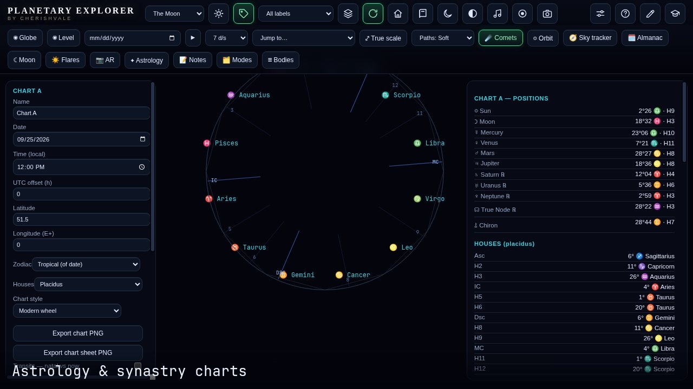
A full birth-chart engine. Enter a date, time, UTC offset and place to get the Ascendant, Midheaven and twelve house cusps in Placidus, whole sign, equal or Porphyry — plus every planet with sign, degree and retrograde state, a complete aspect list, an aspect grid and a house table. Calculated offline from our own ephemeris. Choose your zodiac: tropical, sidereal with five ayanamsas, Vedic nakshatras, or Chinese year animal and solar terms.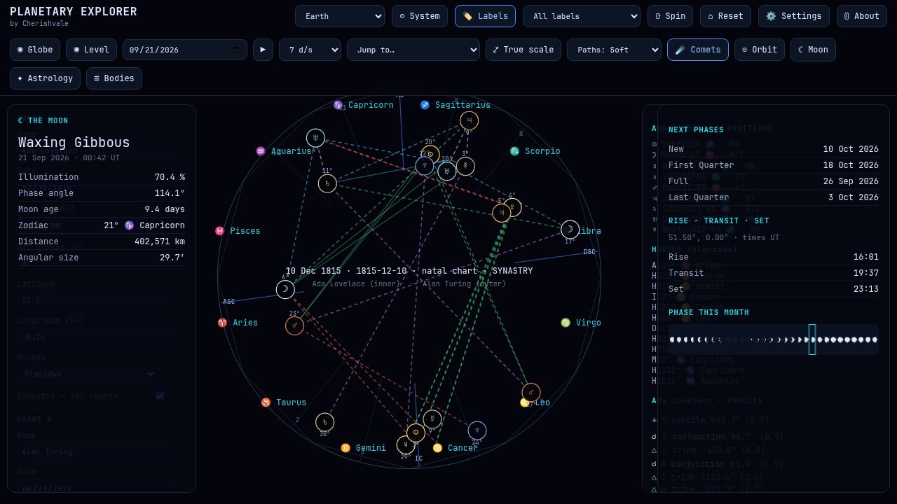
Synastry. Add a second person and both charts share one bi-wheel — inner ring and outer ring — with the cross-aspects drawn between them, a full inter-aspect list and a synastry grid.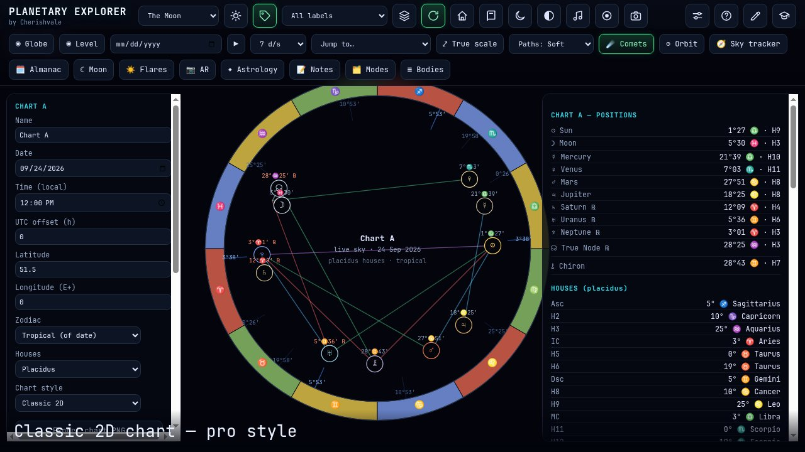
Classic 2D chart. Prefer the traditional look? One switch redraws the wheel flat and print-like — element-colored sign band, glyphs, every cusp degree, planet degree ticks and a center data block — with synastry, transits, progressions and solar returns carried over.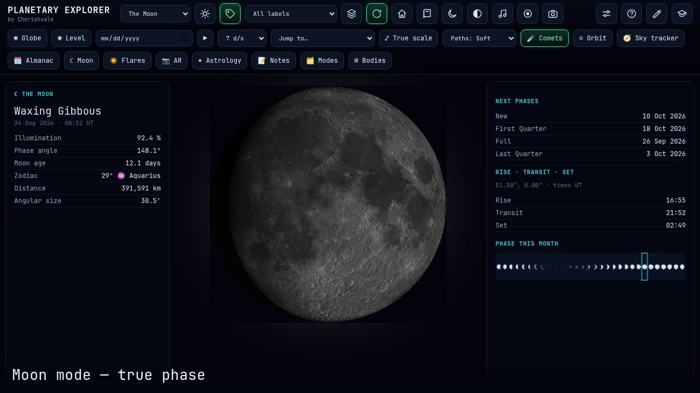
Moon mode. The Moon with its real surface and true phase for any date: illumination, phase angle, moon age, distance, angular size, the next four phases, rise/transit/set for your location, and a day-by-day phase calendar for the month.
41,411 stars (108,000 optional). 88 constellations. 1,900 deep-sky objects. A real chart of the night sky — every constellation with its stick figure and IAU boundary, thousands of stars, and the Messier, Caldwell and brightest NGC/IC galaxies, nebulae and clusters, plotted where they are and coloured by type. Filter the list, tap an object, and read a Tonight plan: its altitude now, transit time and height, rise and set, and a 24-hour altitude curve. Toggle 🔴 Night mode to dim the whole app to red and keep your dark adaptation.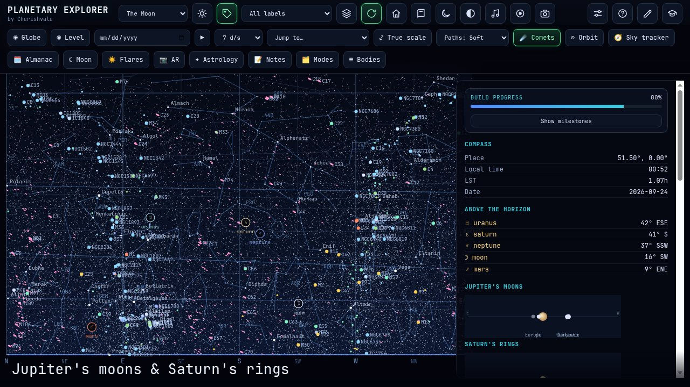
Jupiter's moons and Saturn's rings. The same panel shows where Io, Europa, Ganymede and Callisto are right now, and how far Saturn's rings are tilted open, with Titan alongside — computed from the real orbital periods and each planet's axial tilt.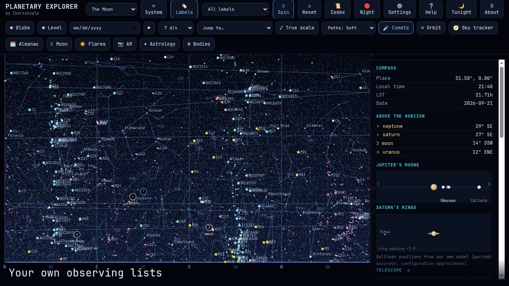
Your own observing lists. Star any object to save it, then work from Favourites, or from built-in Messier, Caldwell and binocular-best lists — each row showing its live altitude and bearing so you know what is worth looking at tonight. Saved on the device.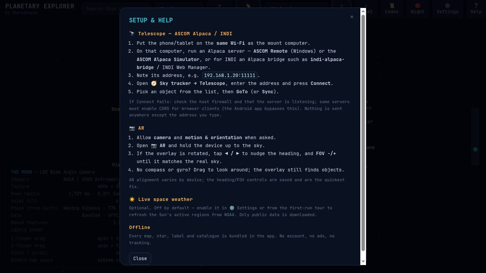
Setup & Help. A built-in guide walks you through connecting an ASCOM Alpaca or INDI mount and setting up AR, including how to nudge the AR heading and field of view if your device's compass drifts. No manual required.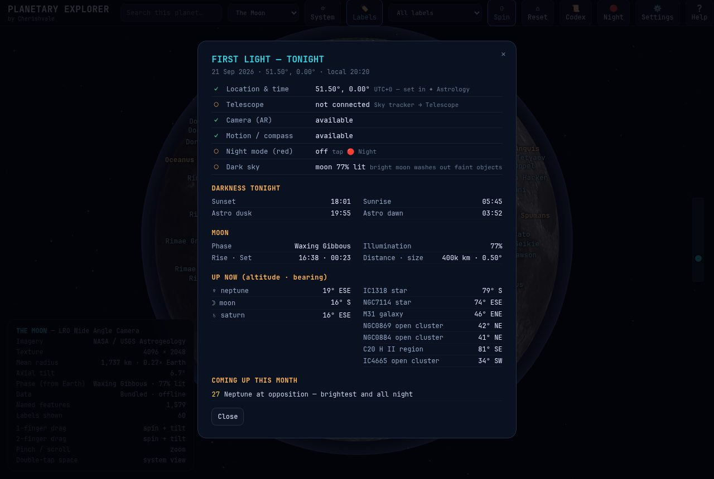
First Light. One tap before you go out: a readiness checklist (time and place, telescope, AR camera and motion, night mode), tonight's darkness window, the Moon's phase and position, what is up right now with altitude and bearing, and the month's coming events.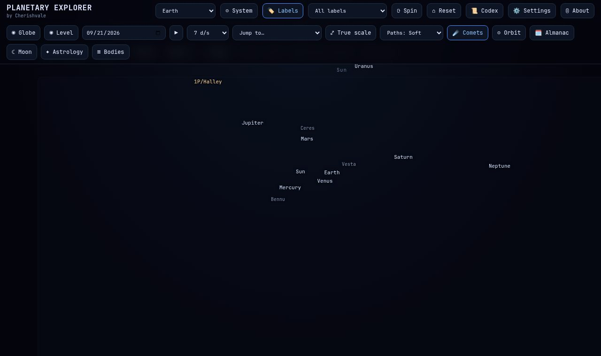
The Almanac. A month at a glance for your location — sunrise and sunset, civil twilight, moonrise and moonset, day length and the moon's phase for every day, with the equinoxes and solstices marked and the traditional name of the month's full moon.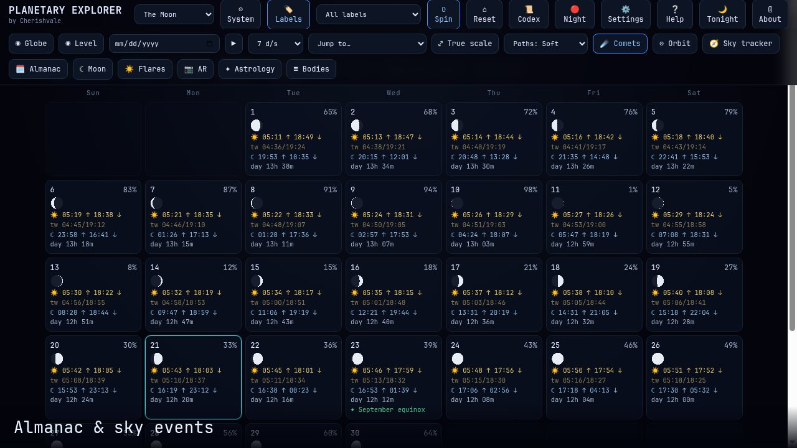
Sky events, all month. Below the calendar is everything worth looking up for: solar and lunar eclipses, planet oppositions, solar conjunctions and greatest elongations, close planet conjunctions, and the meteor showers peaking that month. Computed offline from our own ephemeris.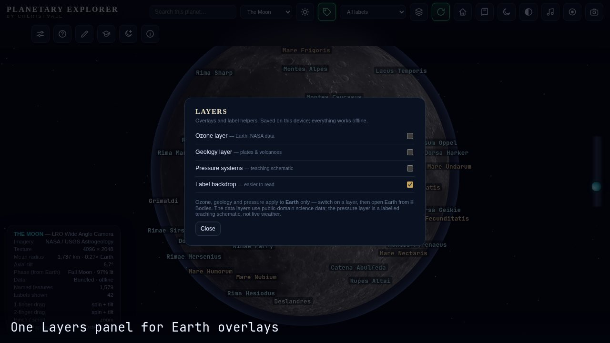
Layers. One panel gathers the Earth overlays — a NASA total-column ozone map, plate boundaries and 1,571 volcanoes, a pressure-systems teaching schematic, and a label backdrop for readability. Public-domain data, bundled offline.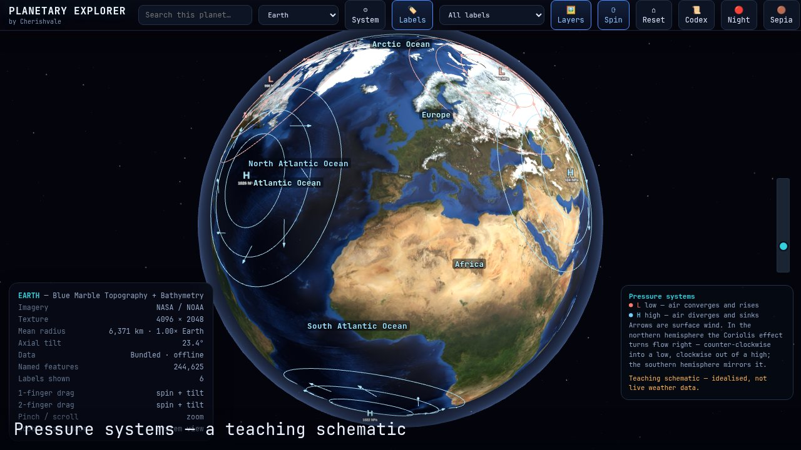
Weather, explained. An optional classroom schematic of the semi-permanent highs and lows: idealized isobars and circulating surface winds, with the Coriolis sense made explicit. Clearly labelled a teaching model, not live data.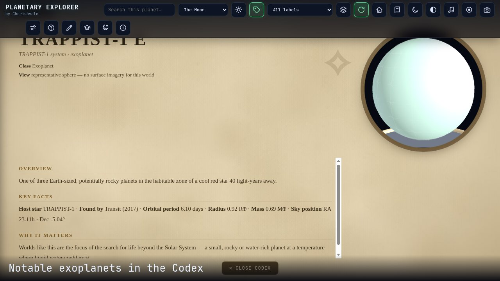
Other worlds. Over 100 notable exoplanets from the NASA Exoplanet Archive — Proxima b, the TRAPPIST-1 family, the hottest and puffiest planets, and the historic firsts — each with a Codex page, searchable by planet or host-star name.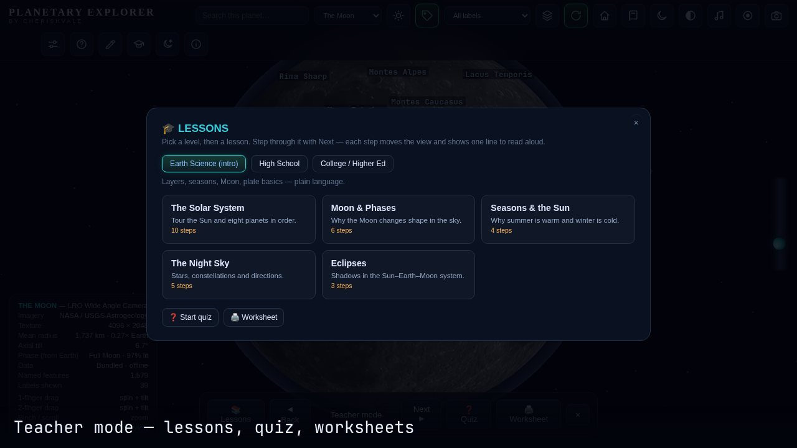
Teacher mode. Guided lessons at three levels (Earth Science, High School, College), an offline quiz, and printable worksheets — built for projectors, tablets and no Wi-Fi.The whole interface reflows for large screens — wider side panels, the full toolbar, and every mode at a glance. The same app scales from a phone to a 10-inch tablet and landscape.
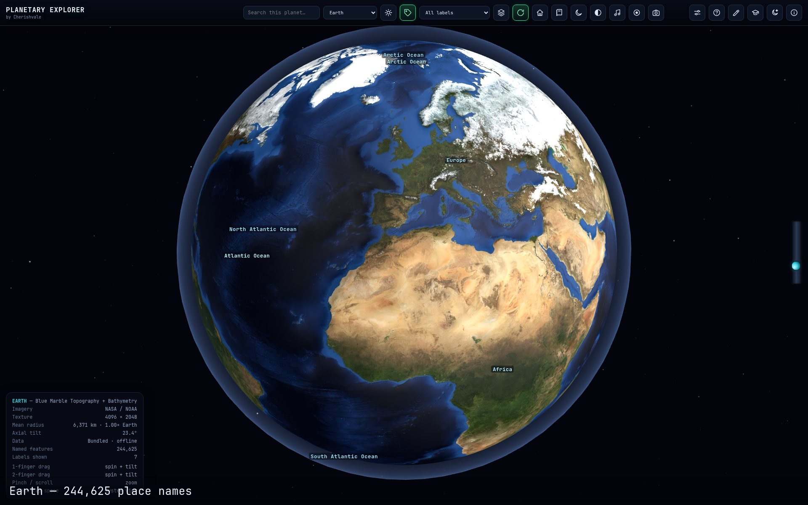
Earth, room to breathe. The atlas opens up on a tablet with 244,625 place names and the full data panel alongside the globe.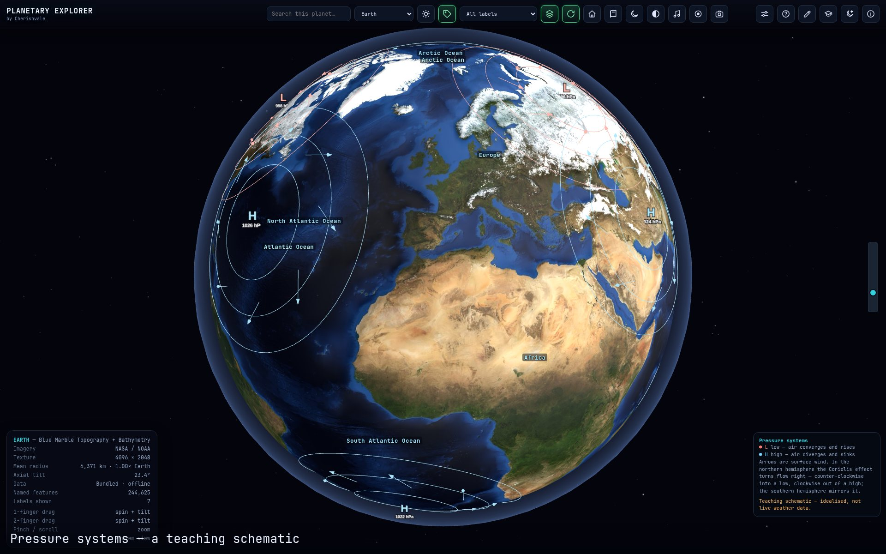
Classroom-ready. Overlays like the pressure-systems schematic and the ozone/geology layers read clearly on a projector or tablet.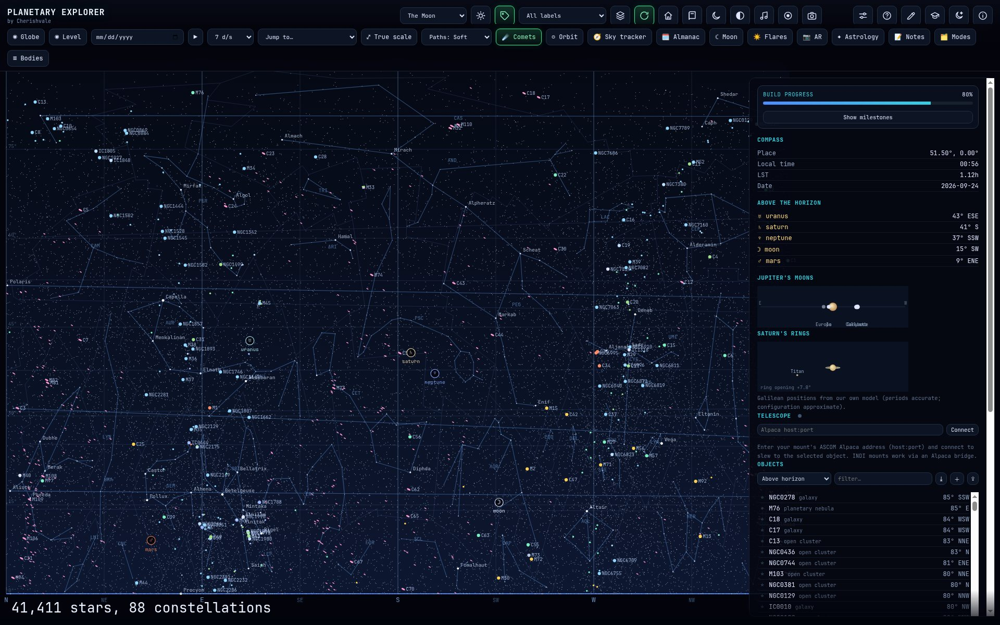
The whole sky, wide. 41,411 stars, all 88 constellations and 1,900 deep-sky objects with the Tonight planner.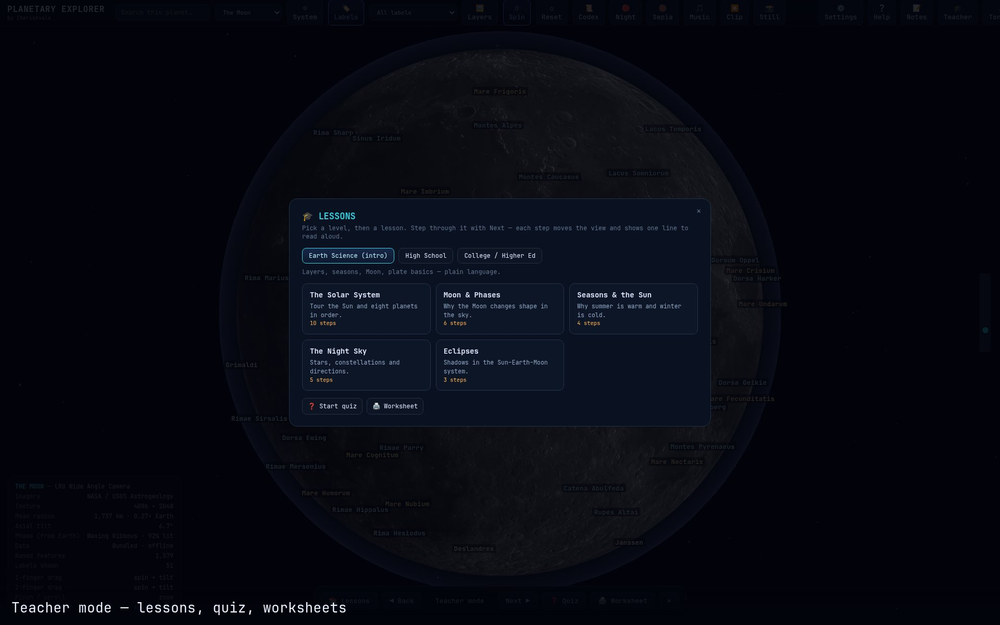
Teacher mode. Lessons, quiz and worksheets sized for the front of the room.Mercury to Neptune, plus Pluto, Charon, the Moon, Phobos, Deimos, Ceres, Vesta, Europa, Ganymede, Titan, Enceladus and Bennu — each with its own globe, data panel and named features.
A true Solar-System map with planets on their real orbits for any date from 1800 to 2050. Play the clock, jump to presets, and follow named comets including Halley, Hale-Bopp, NEOWISE and the interstellar visitors ʻOumuamua, Borisov and 3I/ATLAS.
Earth's full gazetteer — countries, states, capitals, cities and physical features — revealed in tiers as you zoom. Filter by category or search any name and fly to it.
Earth gains a high-resolution layer (~1.6 km per pixel) blended in as you approach, held in memory one tile at a time.
Seven metro areas open as flat, pannable street maps at ~1.2 m per pixel, from public-domain aerial imagery — close enough to pick out individual buildings.
One 🖼 Layers panel gathers the real data overlays — a NASA total-column ozone map with a Dobson-Unit legend, and geology (plate boundaries, major faults and 1,571 volcanoes), plus a label backdrop for readability. All public-domain data, all offline.
An optional classroom schematic of the semi-permanent highs and lows — idealized isobars and circulating surface winds, with the Coriolis sense made explicit. Clearly labelled a teaching model, not live data.
Over 100 notable worlds from other star systems, curated from the NASA Exoplanet Archive — Proxima b, the TRAPPIST-1 family, the hottest and puffiest planets and the historic firsts. Browse them in the Codex and search by planet or host-star name.
Zoom follows altitude, so the ground tracks your finger from whole planet down to a city. Scroll, pinch, or drag the slider; labels resolve continent → country → state → city.
A complete birth-chart engine — Ascendant, Midheaven and houses in Placidus, whole sign, equal or Porphyry, with positions, retrograde states, aspects, an aspect grid and a house table, plus element/modality balance, essential dignities, the lunar nodes and Chiron, aspect patterns, retrograde stations, fixed-star contacts, midpoints, the Arabic parts, transits, progressions and the solar return. A Classic 2D style redraws the wheel in the traditional flat idiom for working astrologers.
A Modes grid jumps to any view — atlas, solar system, sky tracker, space weather, astrology, Moon, almanac, AR, codex, First light — each with a one-line how-to and its own help.
Compare two people on a single bi-wheel: both charts, every cross-aspect, an inter-aspect list and a synastry grid.
The Moon's true phase for any date — illumination, age, distance, angular size, next phases, rise/set times and a month of phases at a glance.
41,411 stars (108,000 optional), all 88 constellations with figures and IAU boundaries, and 1,900 deep-sky objects — Messier, Caldwell and bright NGC/IC — plotted and searchable, with a Tonight planner and public-domain photographs of famous objects.
A classroom layer: guided lessons at three levels (Earth Science, High School, College), an offline quiz, and printable worksheets. Built for projectors, tablets and no Wi-Fi.
An optional soft ambient tone, generated for the app and bundled offline — no streaming, no licence, no ads. Toggle it from the bar.
A layout that adapts from phone to tablet and landscape — the toolbar tidies itself to icons on small phones — with keyboard focus, screen-reader labels and reduced-motion support.
Jupiter's four Galilean moons positioned from their real orbital periods — with transits, occultations and shadow transits marked — and Saturn's ring opening angle with Titan, all live as you change the date.
Star your favourites, or browse built-in Messier, Caldwell and binocular-best lists with each object's live altitude and bearing. Create your own named lists, reorder them, and import or export as text.
Connect to an ASCOM Alpaca mount on your own network and GoTo or Sync the selected object, with abort and park. No account, no cloud.
Point your camera at the sky and the chart is drawn over it — stars, constellations, planets and deep-sky objects, aligned to your device. Falls back to drag-to-look without a compass.
A step-by-step guide for connecting a telescope and setting up AR, with on-screen alignment controls if your device's compass or field of view needs a nudge.
A one-tap pre-session checklist: darkness window, Moon, what is up now with bearings, telescope/AR readiness, and the month's events.
Send tonight's plan or any observing list to a friend, the clipboard, or a text file — with coordinates, magnitudes and bearings.
A deep naked-eye and binocular star catalogue to magnitude 8, with all 88 constellations, and 1,900 deep-sky objects on top.
Tap once to dim the whole interface to red for dark-adapted observing, or switch to a warm sepia tone for comfortable daytime and low-blue reading.
Drag follows your finger at every scale — from whole planet down to a single city — with sensitivity that eases off as you zoom in, so the ground never whips past.
A month calendar with sunrise, sunset, twilight, moonrise, moonset, day length, daily moon phase, the season dates and the full moon's traditional name.
Each month's eclipses, planet oppositions, conjunctions and greatest elongations, and the meteor showers peaking that month — computed offline.
The Sun's active regions from public-domain NOAA SWPC data, with our own geometry for flare risk and Earth impact, plus flare history, Kp and the solar wind — all offline.
A historical page for every catalogued body — naming, etymology, discovery and key facts — browsable and searchable, now including notable exoplanets. Worlds with imagery open as 3D globes.
Every texture, tile and label is bundled in the app. No internet needed, no ads, no accounts, no tracking. (You can optionally let the space-weather view refresh from NOAA.)
A short first-run tour introduces the worlds, the system bar and the sky tools, so a new explorer is never lost. Reopen it any time from About.
Spin every world freely in any direction — no pole lock — with altitude-aware drag so the ground tracks your finger at any zoom.
NASA / USGS spacecraft data and public-domain aerial photography, with original procedurally-generated gas-giant artwork.
Axial tilts, polar flattening and rings for the gas giants, and adjustable orbit-path styling.
An independent software studio building calm, useful, offline apps. More from Cherishvale →
Planetary Explorer is built on open and public-domain data. The app itself is proprietary; the datasets below remain under their own licences and are bundled as derived works.
Public domain (U.S. Government works and agency releases). Surface imagery for the Moon, Mars, Mercury, Venus, Earth and more, plus the space-weather data. Used with attribution as a courtesy.
CC BY-SA 4.0 · mattiaverga/OpenNGC. Every Messier and Caldwell object plus bright NGC/IC clusters, nebulae and galaxies, bundled as a derived dataset under the same licence.
CC BY-SA 4.0 · astronexus/HYG-Database. The optional 108,000-star catalogue to magnitude 10.
BSD-3-Clause · ofrohn/d3-celestial. Star positions from the Hipparcos catalogue; constellation figures and IAU boundaries.
GeoNames, CC BY 4.0; countries and regions from Natural Earth (public domain). The 244,000-name Earth gazetteer.
Public domain. Solar active regions, X-ray flares, Kp and solar wind; and the annual meteor-shower facts.
Generated for this app. No third-party recordings.
Not affiliated with, sponsored by, or endorsed by NASA, USGS, NOAA, ESA, the IAU, or any space agency. All trademarks are the property of their respective owners. Full notices ship with the app (About → Licences & attribution).